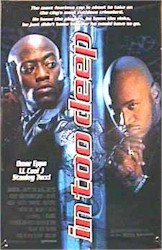
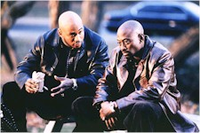
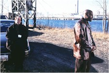

Contents | Features | Reviews | Books | Archives | Store |
 |
|
| Movie Credits | Buy It! |
In Too Deep
Review by
Cynthia Fuchs
Posted 27 August 1999
|  |
Directed by Michael Rymer Starring Ivonne Coll Jermaine Dupri, Omar Epps, Pam Grier, Hill Harper, LL Cool J, Nia Long, Mya, Nas, Stanley Tucci, Veronica Webb, and Jake Weber Written by Michael Henry Brown and Paul Aaron |
It's
for real: LL Cool J is a movie star. When he makes his entrance in Michael
Rymer's undercover cop movie, the girls in the audience whoop with delight and
the guys applaud, respectful and thrilled at the same time. And this for a scene
where the man tears someone's tongue out -- it happens behind the bathroom door,
but you hear enough screaming and see enough blood and flesh that you have a
good idea of what's going on. Through it all, LL Cool J remains poised and
smooth. He knows he's a star and doesn't appear to doubt for a minute that you
know it too.
Such
confidence has served LL Cool J well during his lengthy (15 years and counting)
hiphop career. Never one to back down from a controversy (or fight), he's taken
on younger players with distinctive style and occasional grace. And ever since
he sexed up his act with the single "Doin It" (and MTV rotated it to
the point of tedium a few years ago), he's been all in vogue. And now that
Hollywood is at last upfront about its lust for rappers (after waiting to see
how they'd fare in "black," "urban," and "hood"
films), the entertainment industry seems ready to deal with Mr. J. The way has
been paved by recent in-roaders like the super-nice Will Smith, the
super-charismatic Ice Cube, and the super-poised Nas have made their marks on
big screens (even Puffy had a role in Oliver Stone's new football movie, until
they parted ways earlier this year).
And now LL Cool J seems ready
too, ready to reshape his large persona to fit roles and to rethink his
winner-take-all position when in the same frame with other performers. It was
clear to most anyone watching Deep Blue Sea that LL Cool J has arrived at
a certain peace with himself. In John McTiernan's cleverly wacky
underwater-action pic -- which includes slices and dices from Titanic, Aliens,
Jaws, and The Terminator (a heady mix that suggests yet again that
McTiernan wants to be James Cameron) -- he's a considerable presence,
simultaneously dynamic and compassionate as a Bible-quoting, self-evaluating,
big-risk-taking cook: when he's on screen, it's hard to take your eyes off him
(even when there's a way-cool and speedy digital shark looming nearby).
While
Deep Blue Sea does have those sharks going for it (not to mention a
brief, show-stopping turn by Samuel Jackson), In Too Deep doesn't have
much else except LL Cool J (and several cameos by hiphop or hiphop-related
artists, like Nas, Jermaine Dupris, Mya, Sticky Fingaz, and Shyheim). The movie
wants so badly to be insightful and fresh regarding the dangers and travails of
undercover narcotics work, but it seems mired in cliches rather than the real
life experience from which it ostensibly draws. Co-writers and -producers Paul
Aaron and Michael Henry Brown (the latter wrote Dead Presidents) say that
they carved their story out of conversations with undercover cops and dealers.
That they and Australian director
Rymer (who made the affecting Angel Baby, about junkies in love) have
come up with such stock characters suggests either that the drug business is
indeed full of predictable behaviors and personalities, or that it's so
outrageous that it's beyond telling: the only way to approximate it is through
familiar images and ideas. Or maybe this movie has the misfortune to arrive in
theaters some seven years after Bill Duke's Deep Cover, in which Larry
Fishburne gives a flat-out brilliant as a cop caught up in his own undercover
identity, questioning the perfidious, racist system he serves.
In In Too Deep, the cop is
Jeff Cole (Omar Epps). During his five years undercover in Cincinnati, he faces
similar questions, but acts out his responses in ways more like Johnny Depp in Donnie
Brasco than Fishburne. That is, he turns mean, player-style, toward the
women in his life, namely his sweet, unbelievably patient dancer-girlfriend Myra
(Nia Long, who has little to do as an extension of Jeff but look serene or sad)
and his seasoned surveillance monitor Detective Wilson (Pam Grier). He
apparently learns this behavior from his dealer associates, in particular the
big cheese named, so perfectly, God (LL Cool J). It's true that you never see
God abuse "his" woman (Veronica Webb) physically, but he treats her
and understands her as property, just as he sees his young son as heir to his
wealth and reputation. Sure, he leaves "Little Boo-Boo" in a car seat
while he and Jeff beat the shit out of a guy who owes him money, brutally
slamming his head against the car window while the baby shrieks inside.
As
appalling and ruthless as he is, God, has a rationale for his actions, one that
he's spent time constructing: it's about respect and maintaining order, which
make him rich enough to give back to the community when Thanksgiving comes
around. While he's hardly sensitive (you see him punish one traitor by ramming a
pool cue up his rectum), he is seductive. And while Jeff is determined to bring
God down, he's also impressed by his new friend's utter loyalty, genuine
thoughtfulness, and solid resistance to "the man." Embodying the
"lure of the streets," he acts out the macho camaraderie, excitement,
and violence in ways that almost make sense. The "sense" tends to be
signalled, however, by changes in Jeff's hair: when his head is shaved, he's
undercover, when he's wearing twists, he's the solid citizen.
Compared to Jeff's official boss
(Stanley Tucci), God is warm and giving. His devotion to family almost makes
Jeff's nearly crossing over to the dark side seem plausible. And then you
remember that he's terrible, frightening, and vicious when he believes he must
be. God lives in a world where the cops are the natural enemy, where corruption
is the norm, where drugs are a means to ends, not a matter of morality. For all
his practicality, he remains a poet of sorts, an alluring and charismatic
figure. You can imagine him on a stage, pronouncing his faith, creating his own
beat. It's too bad that the film doesn't have his back.
Contents | Features | Reviews
| Books | Archives | Store
Copyright © 1999 by Nitrate Productions, Inc. All
Rights Reserved.